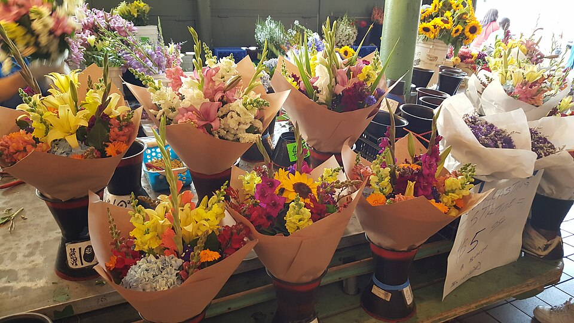
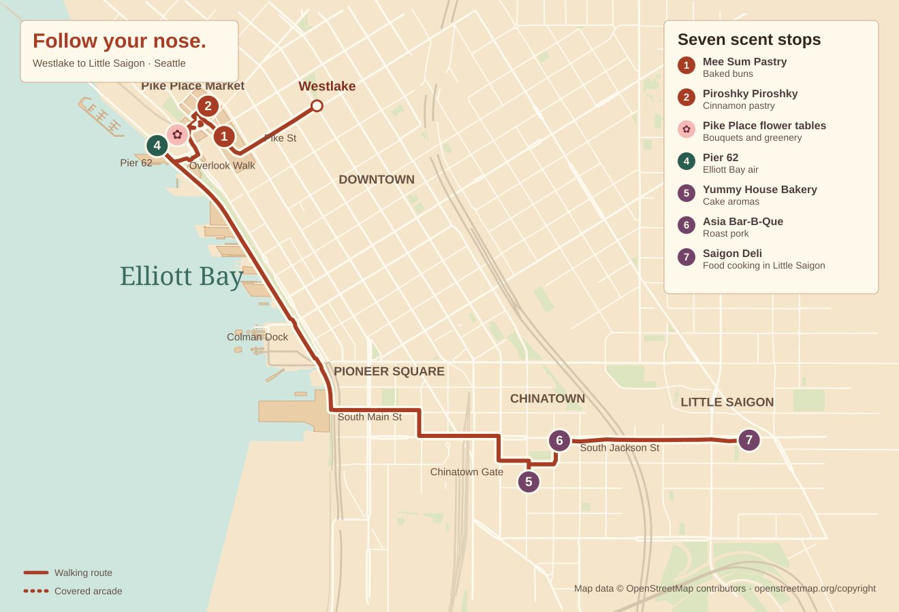

A Seattle smell walk
Follow your nose.
Warm buns, market flowers, a whiff of salt air. Take the slow way from Westlake to Little Saigon.
2.6 mi 60–75 min One way


The smell trail
Westlake Little Saigon

What’s in the air?
Start at 4th and Pike, near Westlake Station. These seven scent clues come from past visits. Pause at each stop and see what you notice.
-
Pike Place Market
Baked bunsMee Sum Pastry
Walk downhill on Pike Street, turn onto Pike Place, and pause by the Triangle Building’s walk-up counter. Look for the Mee Sum sign between 1526 and 1530 Pike Place.
A passerby reported smelling baked buns from the sidewalk. Another noticed baking aromas on approach in September 2025.
-
Cinnamon pastryPiroshky Piroshky
Continue north on Pike Place to number 1908. Pause along the storefront where there’s space to let people pass.
A writer walking the market caught a whiff of cinnamon near the bakery.
-
Bouquets and greeneryPike Place flower tables
Cross Pike Place into the covered North Arcade near Stewart Street. Pause in the public aisle beside the flower tables near Yang Farm.
A food-tour writer noticed the scent of bouquets at the north end of the market. In November the displays may include fresh stems, dried flowers, or eucalyptus.
-
The waterfront
Bay airPier 62
Follow signs for MarketFront and Overlook Walk. Take the stairs or the Ocean Pavilion elevator to the promenade. Head north and pause on the sidewalk by the pier’s north edge.
In 2022, a local writer noticed a distinct marine smell here near the pier pilings.
-
Chinatown & Little Saigon
Cake aromasYummy House Bakery
Walk south on the promenade past Pier 54 and Colman Dock. Cross Alaskan Way at South Main Street. Follow Main east, turn right at 2nd Avenue South, then left on South Jackson Street. Turn right on 5th Avenue South and walk through the Historic Chinatown Gate. Follow South King Street to 6th Avenue South and turn south to number 522.
Former neighborhood resident Janet Brown recalled the smell of its cakes drifting down the street.
-
Roast porkAsia Bar-B-Que
Return to South King Street and walk past Hing Hay Park. Turn north on Maynard Avenue South to Jackson and pause outside 655A South Jackson Street.
A customer described the scent of barbecue drawing them toward the shop. A neighborhood account recalls roast pork in the air.
-
Something cookingSaigon Deli
Continue east on South Jackson Street under I‑5. Pause on the sidewalk at number 1237, just past 12th Avenue South.
A customer smelled food cooking as they parked. They didn’t name the dish.
A smell from the past
At 8th and King, a reporter noticed sugar and almonds in the air when Tsue Chong made fortune cookies in the neighborhood. The former factory has since found new uses. KNKX account ↗
Getting back
Follow South Jackson Street west to 5th Avenue South for Link light rail back toward Westlake. Station information ↗